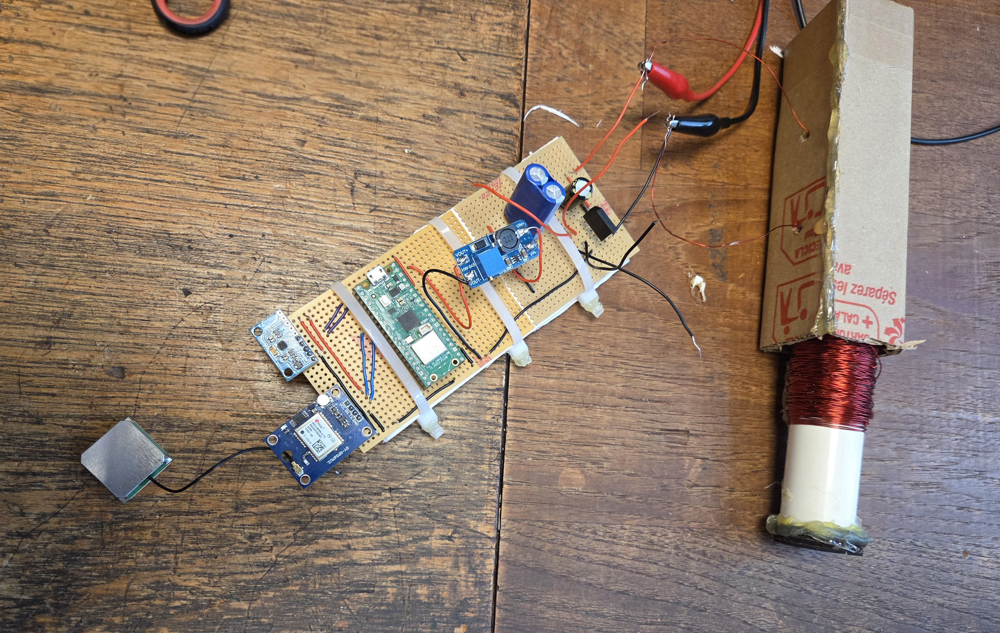

Following the transfer of our components to a Veroboard, we conducted rigorous debugging to ensure system stability when the Pico initially failed to turn on. By identifying and severing unintended copper track connections that were causing a massive short circuit across the board, we restored full software functionality on the permanent hardware. This process ensured our software could reliably interact with the hardware even under the stresses of a permanent build.
Week 3
The third week focused on moving our project from a temporary breadboard environment to a permanent, field-ready hardware configuration. Our goal was to solder the power generation and sensor circuits onto Veroboards and stripboards to ensure mechanical durability during high-impact athletic testing.
Software
In this stage, software work involved deep-level system debugging to ensure our code remained functional as the hardware moved to its permanent, soldered form.

Hardware
The hardware objective was the transition from prototype to permanent configuration through precise soldering and continuity testing.

We permanently soldered the power generation unit onto a dedicated board. Subsequent testing verified that the rectifier bridge successfully converted AC to DC during the charging process. We established a safe operating window between 3.3V and 5V, ensuring our Pico could function correctly without risk of damage.

We mounted the GPS and accelerometer modules onto a stripboard with header pins and insulated wire to create a robust, permanent circuit. After reflowing a cold solder joint to ensure a perfect connection, we used a multimeter to verify zero continuity between VCC and GND. The system successfully detected both sensors, marking the completion of a permanent, battle-tested hardware configuration.